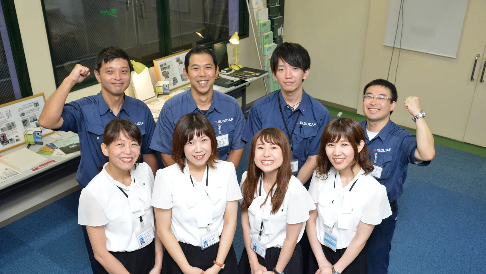
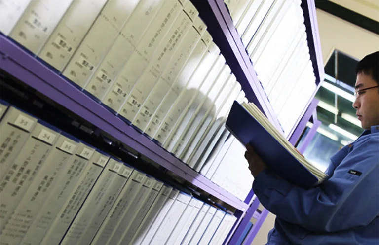
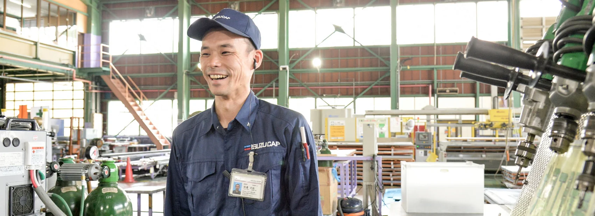

仕事も技術も人の想いも、丁寧に引き継ぐ。

01 / CORPORATE MIND
両手で受け取り、
両手で手渡す。
お客様から託された仕事を、ひとつひとつ丁寧に。
ものづくりに携わる人の技術と想いを大切にしながら、確かな品質を次へつなぐ。それが、いすゞ製作所の変わらない姿勢です。
1938年、気象観測機器のものづくりから始まったいすゞ製作所。長く培ってきた温度と湿度の技術を生かし、現在は製品の信頼性を確かめる環境試験装置を手がけています。完成した製品の向こうには、それを使う人や、製品を信頼して暮らす人々がいます。私たちの仕事は、その当たり前を支える仕事です。
前向きな力と発想で、お客様に驚きと感動を届ける。
一人では生み出せない価値を、仲間と形にする。
02 / FUTURE & COMMUNITY
三条から、
次の未来へ。
人に求められ、地球に求められる活動を行う。
いすゞ製作所が目指しているのは、装置をつくることだけではありません。お客様が本当に必要としている性能を考え、安全で使いやすく、資源を大切にしたものづくりを追求すること。そして、長く受け継いできた技術を次の世代に手渡すことです。
新潟県三条市に本社を置く企業として、地域とともに歩み、地元の人材を迎え、学びや文化を支えながら、ものづくりの未来につなげていきます。

社会の品質を支える
製品の温度・湿度に対する信頼性を検証する装置を通じて、さまざまなものづくりの品質を支えます。
地球を考えてつくる
省電力と性能の両立、資源を大切にする設計など、未来の地球環境に配慮した製品づくりを目指します。
地域と人を育てる
地元人材の採用、教育機関への支援、地域行事やスポーツ・文化活動への参加・協賛を大切にします。
地域・環境・人材育成への方針は、いすゞ製作所のSDGs宣言に基づいています。具体的な活動実績・写真は掲載前に担当部署へ確認します。
いすゞ製作所 SDGs宣言を見る ↗03 / OUR WORK
一台の装置に、いくつもの仕事。
相談・提案から設計、加工、組立、検査、納入後のサポートまで。多様な専門性をつなぎ、お客様に必要な装置をつくります。

DESIGN / DEVELOPMENT
設計・開発
用途や試験条件を読み解き、装置の構造や使いやすさを考える仕事。

MANUFACTURING
製造・組立
加工、塗装、配線、組立などの工程を通じ、一台の装置を確かな形にする仕事。

QUALITY / SERVICE
検査・アフターサービス
品質を確認し、納入後も安心して使っていただくために支える仕事。
このほか、お客様の相談を受けて提案する営業・セールスエンジニア、企画、管理なども事業を支えています。上記は仕事の紹介であり、現在の募集職種を示すものではありません。
製造工程・技術について見る ↗04 / PEOPLE & CULTURE
元気と笑顔から、発想が生まれる。
技術やノウハウに加え、相手を想う気持ちを大切にする。社員の声と働く姿から、いすゞ製作所の日常を伝えます。


人物写真は既存公開サイト由来のデザイン仮配置です。本人の再掲載許諾、在籍・役職・仕事内容を確認して正式なインタビュー原稿に置き換えます。
お客様を想う
使う人の安全や使いやすさを考える。
仲間を想う
技術や想いを受け渡し、チームで形にする。
変化を楽しむ
変わらない品質を守りながら、新しい方法を考える。
05 / WORKPLACE & SUPPORT
人が育ち、長く働ける環境へ。
一人ひとりが公平に成長できる職場づくりを目指しています。
成長と学び
職務や役割に応じた社内教育、キャリア形成支援に取り組む方針です。
多様な人材の活躍
差別やハラスメントを許さず、多様な人材が働ける環境づくりを進めます。
健康・安心
健康経営や、日常業務における安全管理の充実を目指します。
福利厚生・働く条件について
給与、賞与、諸手当、年間休日、勤務時間、休暇、保険、育成制度などは、職種や募集時期によって異なる場合があります。現在の募集内容と正式な就労条件を、採用担当が確認したうえで掲載します。
現時点のデザイン案には、未確認の待遇数値や制度を記載していません。
既存サイトの募集要項・就労条件を確認する ↗06 / APPLICATION
いすゞ製作所で、働く。
仕事内容や会社の考え方に共感いただけた方へ。募集内容の確認、会社見学、応募の入口をご案内します。
募集要項を確認する
募集職種、応募資格、給与・手当、勤務時間、休日などの最新条件をご確認ください。
募集要項・就労条件 ↗会社を見学する
働く場所や仕事の様子を知りたい方へ。会社見学の申し込み窓口をご案内します。
会社見学のご案内 ↗採用に応募する
募集条件をご確認のうえ、公式の採用エントリー窓口からお申し込みください。
採用エントリー ↗応募フォームと会社見学フォームの個別URL・動作は切替前に実機検証します。ここでは既存公式採用トップへの案内を維持し、試作ページから応募情報を送信しません。
採用に関するお問い合わせ
0256-46-2200株式会社いすゞ製作所 新潟県三条市荻堀字藤平1397-42